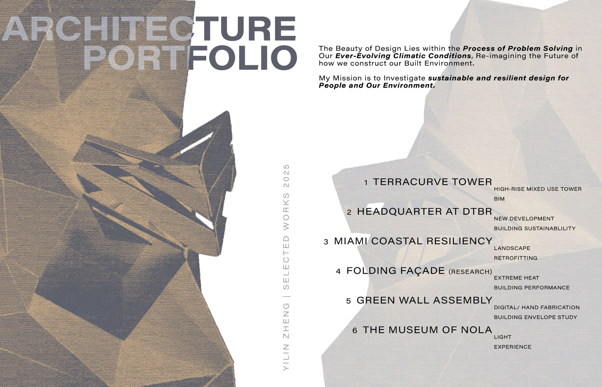
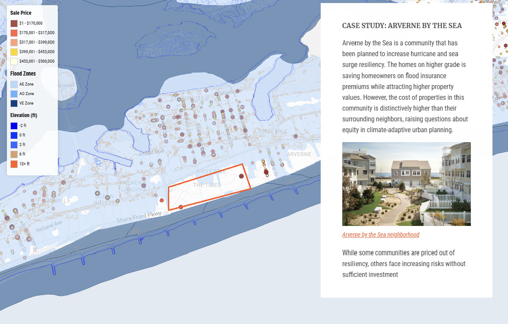

Hi there 👋, I'm Yilin Zheng.
I am a computational designer and researcher based in New York City. My works explore the intersection of emerging technologies, data, tool building, and design with systems. I am pursuing an M.S. in Computational Design Practice at Columbia University, GSAPP and holds a Bachelor of Architecture from Louisiana States University, SoA.
I am passionate about design that addresses the challenges of how we live in our environment. I believe that the essence of technology is ,
and should be, about the system it embodies.
Selected Works
View Abstract Book

Peer-Reviewed Publication
ACSA 113th Annual Meeting: Repair -
Impact of Climate-Responsive Shading System Study showing how rotational axis impact shading and energy consumption of its interior space.
Simulationiterative designGrasshopperRhinoClimateStudioLadybug
<- Demo of a scale model prototype
SwiftUIESP32 microcontrollerServo motor

Comphrensive Architectural Design Studies Selected work 2022-2025.
BIM, Fabrication, Iteration studies, Sustsinable design.
Peer-Reviewed Publication
ACSA 113th Annual Meeting: Repair -
Impact of Climate-Responsive Shading System Study showing how rotational axis impact shading and energy consumption of its interior space.
Simulationiterative designGrasshopperRhinoClimateStudioLadybug
<- Demo of a scale model prototype
SwiftUIESP32 microcontrollerServo motor
Comphrensive Architectural Design Studies Selected work 2022-2025.
BIM, Fabrication, Iteration studies, Sustsinable design.
Computational Spatial Explorations
BENTO: Platform that leverages data-driven location insights for small retail store spatial management.
GrasshopperMapboxGISRhinoFigmaPythonHTMLCSSJavaScript
<- Demo of BENTO Web UI built with Rhino.Compute for BENTO. Respond simultaneously to 3D model generated with Grasshopper and Rhino.

Terracurve Tower is a high-rise mixed-use tower project that explores Building Information Modeling (BIM) through GrasshopperRhinoRevit interoperability
Design Research: Flood Risk and User Perception
Prototype Tool：Where the Water Reached prototype of flood risk resources.
GrasshopperMapboxGISRhinoFigmaPythonWeb UIMachine Learning
<- User journey and user flow research for tool design
High-risk areas & people who live there: The tension between affordability, social ties, and long-term risk.
MapboxLeaflet
EXPLORE, EXPLAIN, PROPOSE: Politics of extreme weather events & housing justice.
Housing & Real Estate: Solar-Integrated SFR Investment
Can solar-integrated SFR unlock returns at scale for PE investors in DFW, or does it introduce new cost barriers?
PythonExcel Model
Click to view my full resume here.
My works focus on Design Computation
- Systems Thinking
- Design Engineering
- Environmental Analysis & Resilient Design
- Parametric & Algorithmic Design
- Data Visualization
- Performance & Simulation
- Machine Learning Applications
- Digital Tool Development
Conference Presentations
- Association of Collegiate Schools of Architecture - 113th Annual Meeting: REPAIR
- Stanford Research Conference
- National Conference on Undergraduate Research
- LSU Discover Day Undergraduate Research & Creativity Conference
Scholarships & Grants
- GSAPP Merit-based Scholarship
- GSAPP Kinne Fellows Traveling Prize
- CARRIE L. O'CONNOR French Studies Scholarship
- DURP Travel Grant
- Terry Devine Memorial Scholarship
- TOPS Honors Award
Experience
Spatial Intelligence Association • Feb 2025 – Current
LSU SoA • Dec 2022 – May 2024
Wiss, Janney, Elstner Associates, Inc. • Jun 2023 – Aug 2023
LSU • Aug 2022 – May 2023
Education
Graduate School of Architecture Planning & Preservation
M.S. Computational Design Practice • May 2025
Bachelor of Architecture • May 2019
Awards & Honors
METROPOLIS Magazine, 2024
LSU, 2024
Architectural Research Centers Consortium, 2024
LSU SoA, 2024

Yilin Zheng, LEED Green Associate, is an designer and researcher with a focus on climate resiliency. She employs her creativity, analytical reasoning, and research skills to create data-driven strategies and solutions for the built environment.
Previously she was a student researcher at Louisiana State University focusing on energy performance and building envelopes design. She has also worked as a consulting intern at Wiss, Janney, Elstner Associates, Inc., where she worked on building envelope design and engineering strategies.